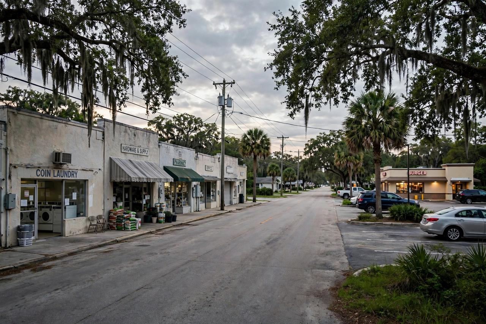

Bartow, Florida: un nino de 3 anos muere tras dispararse con la pistola de su padre en un auto en un Burger King
Un nino de 3 anos, a cuatro dias de cumplir cuatro anos, murio en Lakeland Regional Health tras dispararse en la cara con la Glock de su padre dentro de un vehiculo en el Burger King de 109 E Van Fleet Drive el jueves por la noche, dijo el sheriff Grady Judd en una conferencia a las 9:30 p.m.

Puntos clave
- Actualizado 03:38 UTC: un nino de 3 anos murio despues de dispararse con la pistola de su padre dentro de un vehiculo en un Burger King en Bartow el jueves por la noche, dijo el sheriff Grady Judd…
- Judd dijo que el tiroteo ocurrio hacia las 6:30 p.m. La familia, que se mudo a Florida desde Connecticut hace cuatro meses, habia pasado por el drive thru del Burger King de 109 E Van Fleet Drive…
- El nino, que jugaba sin sujecion en el asiento trasero y estaba a cuatro dias de cumplir cuatro anos, tomo el arma y se disparo en la cara, dijo Judd.
Actualizado 03:38 UTC: un nino de 3 anos murio despues de dispararse con la pistola de su padre dentro de un vehiculo en un Burger King en Bartow el jueves por la noche, dijo el sheriff Grady Judd a los periodistas en una conferencia a las 9:30 p.m., corrigiendo los primeros reportes que describieron a un nino de 4 anos gravemente herido.
Judd dijo que el tiroteo ocurrio hacia las 6:30 p.m. La familia, que se mudo a Florida desde Connecticut hace cuatro meses, habia pasado por el drive thru del Burger King de 109 E Van Fleet Drive para comprar la cena cuando la tarjeta de credito del padre fue rechazada. El padre se estaciono para resolver el problema de la tarjeta. Al inclinarse para revisar sus tarjetas, saco su pistola Glock de la cintura y la dejo dentro del vehiculo, dijo Judd.
El nino, que jugaba sin sujecion en el asiento trasero y estaba a cuatro dias de cumplir cuatro anos, tomo el arma y se disparo en la cara, dijo Judd. Los investigadores encontraron un agujero de bala en el techo del auto, casi en el centro. El padre oyo un fuerte estallido, salio y corrio freneticamente alrededor del vehiculo, y una mujer en el auto vecino salio y llamo al 911, dijo Judd, describiendo el video de vigilancia del estacionamiento.
El nino fue llevado de urgencia a Lakeland Regional Health, donde fue declarado muerto hacia las 7:30 p.m. Judd dijo que ambos padres son gerentes de Lowe's. No hubo arrestos el jueves por la noche. Los detectives envian la informacion de la investigacion a la Oficina del Fiscal Estatal, que decidira si se presentan cargos. La policia de Bartow lidera la investigacion, con ayuda de la Oficina del Sheriff del Condado de Polk.
Un nino de 4 anos resulto gravemente herido el jueves por la noche despues de recibir un disparo dentro de un vehiculo en el estacionamiento de un Burger King en Bartow, Florida, dijo la Oficina del Sheriff del Condado de Polk.
El tiroteo ocurrio en el Burger King de 109 E Van Fleet Drive en Bartow. El nino recibio un disparo dentro del vehiculo y sufrio heridas criticas, dijo la oficina del sheriff a medios locales. El nombre del nino no ha sido publicado.
Quien investiga
El Departamento de Policia de Bartow lidera la investigacion, y la Oficina del Sheriff del Condado de Polk ayuda, dijeron ambas agencias. Una foto de la escena publicada en la pagina de X de la oficina del sheriff mostraba un sedan Toyota blanco con lo que parecia un kit medico sobre la parte trasera, informo The Ledger.
Se esperaba que el sheriff del Condado de Polk, Grady Judd, diera mas detalles en una conferencia a las 9:30 p.m. del jueves. Los medios locales no habian reportado datos nuevos de esa conferencia cuando se publico esta historia, y el relato basico de la oficina del sheriff no habia cambiado: un nino pequeno, un disparo dentro de un auto y un estacionamiento de restaurante en Bartow.
Lo que los funcionarios no han dicho
Los investigadores no han confirmado que hizo que el arma se disparara. No han dicho quien manipulaba el arma de fuego, si el disparo fue accidental o intencional, o si habia alguien mas en el vehiculo cuando ocurrio.
Los funcionarios no han publicado detalles sobre sospechosos, arrestos o posibles cargos, informo FOX 13. No han dicho a donde fue llevado el nino para recibir tratamiento, y no han dado una actualizacion sobre su estado mas alla de describir las heridas como criticas en los primeros reportes de la oficina del sheriff el jueves por la noche.
Ese silencio es normal en las primeras horas de un caso como este, cuando los detectives aun entrevistan a las personas que estaban en la escena y reconstruyen el orden de los hechos dentro del auto. Pero tambien significa que la pregunta central en Bartow sigue sin respuesta esta noche: como un nino de 4 anos termino baleado dentro de un vehiculo estacionado en un restaurante de comida rapida, y quien sostenia el arma.
Que sigue
La policia de Bartow y los investigadores del sheriff tendran que establecer quien era el dueno del arma, quien tenia acceso a ella dentro del vehiculo y que paso en los momentos antes del disparo. Esas respuestas decidiran si este caso termina como una acusacion penal, o como la conclusion de que un arma dejada al alcance de un nino se disparo y un nino pago el precio.
Por ahora, los hechos confirmados son pocos y claros. Un nino de 4 anos recibio un disparo dentro de un vehiculo en 109 E Van Fleet Drive el jueves por la noche, 22 de octubre. Las heridas fueron descritas como criticas. Dos agencias investigan, la policia de Bartow al frente y la Oficina del Sheriff del Condado de Polk en apoyo. El sheriff Judd tenia previsto hablar a las 9:30 p.m.
Cualquier persona con informacion sobre el tiroteo debe contactar a la policia de Bartow o a la Oficina del Sheriff del Condado de Polk, las agencias a cargo de la investigacion. Esta historia se actualizara cuando los investigadores publiquen las circunstancias del tiroteo o una actualizacion sobre el estado del nino.
Fuentes
Reportes de WFTS Tampa Bay 28, FOX 13 Tampa Bay y The Ledger.
Cronología
- Oct 22, 2026Un nino de 4 anos recibe un disparo dentro de un vehiculo en el estacionamiento del Burger King de 109 E Van Fleet Drive en Bartow y resulta gravemente herido, dice la Oficina del Sheriff del Condado de Polk.
- Oct 22, 2026La policia de Bartow lidera la investigacion con ayuda de la Oficina del Sheriff del Condado de Polk. El sheriff Grady Judd tiene previsto hablar con la prensa a las 9:30 p.m.
- Oct 22, 2026El sheriff Grady Judd habla con la prensa a las 9:30 p.m. y confirma que el nino tenia 3 anos, estaba a cuatro dias de cumplir cuatro anos, y se disparo en la cara con la Glock de su padre despues de que el padre dejara el arma dentro del auto mientras resolvia una tarjeta rechazada. El nino fue declarado muerto en Lakeland Regional Health hacia las 7:30 p.m. No hubo arrestos, y los detectives envian el caso a la Oficina del Fiscal Estatal.
Fuentes
- WFTS Tampa Bay 28: 4-year-old child critically injured after being shot in vehicle in Bartow: PCSO
- FOX 13 Tampa Bay: 4-year-old shot in vehicle outside of Bartow restaurant, deputies investigating: PCSO
- The Ledger: 4-year-old critically injured by gunshot in car at Bartow Burger King
- FOX 13 Tampa Bay: 3-year-old boy dead after accidentally turning gun on self inside vehicle in Bartow, Polk County deputies say
- FOX 35 Orlando: Boy, 3, dies after accidental shooting inside vehicle in Polk County, deputies say